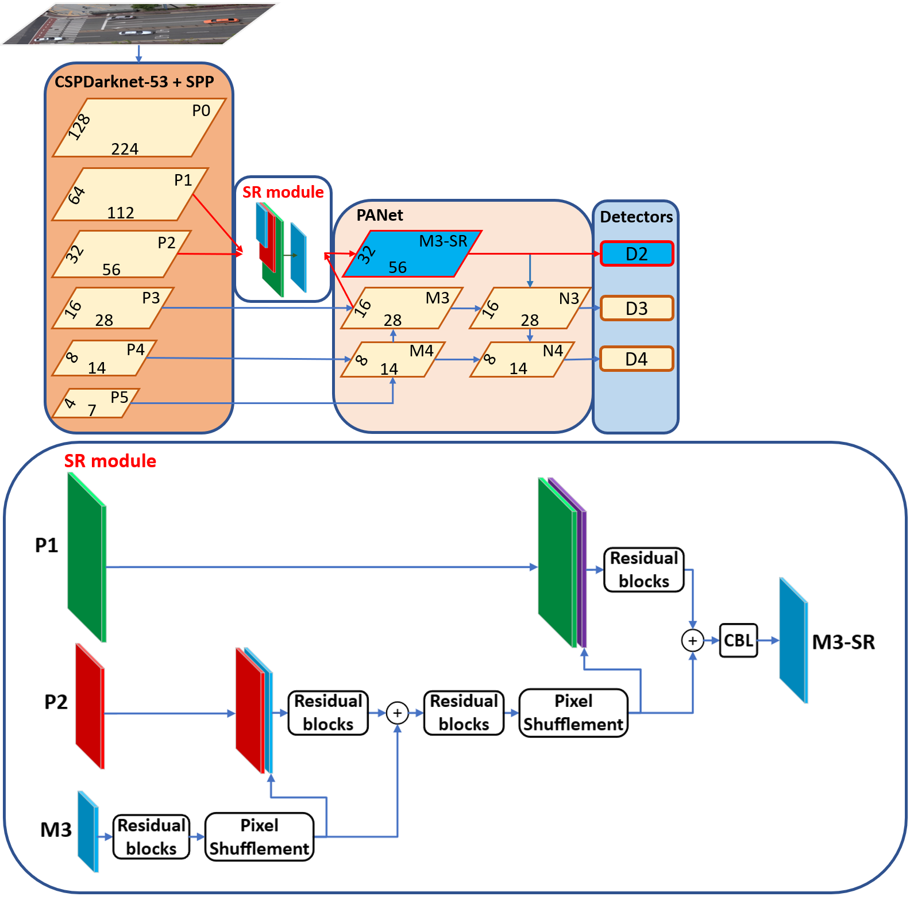
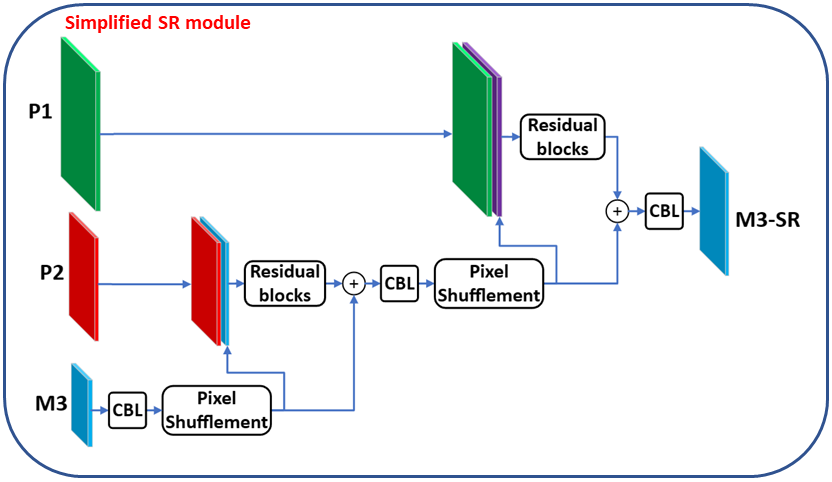

ACADEMIC · IVPG LAB, SEJONG UNIVERSITY
YOLOv4-SRm: Super-Resolution for Small Object Detection
Architecture
Rather than upscaling the input image (computationally expensive), this work enhances the detector's internal feature maps for small objects directly. Three variants were built on top of YOLOv4:
- YOLOv4-FTT — a Feature Texture Transfer module that fuses backbone and neck feature maps to enrich small-object detail.
- YOLOv4-SRm — a novel super-resolution module that combines three feature maps at different resolutions into a single enhanced representation.
- YOLOv4-SSRm — a simplified version of SRm with about 50% less computation than FTT at comparable accuracy, making it practical for edge deployment.


The SSRm variant was pruned and INT8-quantized, then deployed via the Qualcomm® Neural Processing SDK (SNPE) on a Qualcomm QCS610 SoC for real-time CCTV detection.
Full implementation: github.com/hxnghia99/Yolov4_Learning
Demo
Qualitative detection results across the three variants (FTT, SRm, SSRm) on the self-built surveillance dataset — vehicles, pedestrians, and cyclists:

The same comparison on VisDrone2019 aerial/drone imagery, which is denser and has many more small objects (pedestrians, bicycles, cars, vans, trucks, tricycles, buses, motorbikes):

Performance
YOLOv4-SRm reached 79.09% AP50 / 47.42% AP on the self-built dataset and 24.86% AP50 / 12.28% AP on VisDrone2019 — both well above vanilla YOLOv4 (67.71% / 38.62% and 15.98% / 7.23%). SRGAN+YOLOv4 edges out SRm slightly on accuracy but at 572.60 GFLOPs versus SRm's 93.88 GFLOPs on VisDrone2019, making it impractical for edge devices.
| Model | AP50 | AP | AP50 (Tiny) | AP (Tiny) | AP50 (Small) | AP (Small) |
|---|---|---|---|---|---|---|
| Vanilla YOLOv4 | 67.71 | 38.62 | 88.59 | 52.78 | 94.41 | 70.05 |
| YOLOv8-L | 67.34 | 41.84 | 88.75 | 54.16 | 96.88 | 76.16 |
| SRGAN + YOLOv4 | 79.17 | 48.05 | 93.35 | 61.71 | 96.56 | 75.53 |
| YOLOv4-HR | 72.66 | 41.52 | 89.08 | 55.16 | 92.96 | 68.26 |
| YOLOv4-FTT | 77.31 | 44.15 | 92.37 | 57.28 | 93.78 | 71.37 |
| YOLOv4-SRm | 79.09 | 47.42 | 92.14 | 60.20 | 95.46 | 72.06 |
| YOLOv4-SSRm | 77.20 | 44.03 | 91.84 | 56.43 | 96.60 | 71.69 |
| Model | AP50 | AP | AP50 (Tiny) | AP (Tiny) | AP50 (Small) | AP (Small) |
|---|---|---|---|---|---|---|
| Vanilla YOLOv4 | 15.98 | 7.23 | 17.77 | 6.56 | 34.46 | 15.15 |
| YOLOv8-L | 19.08 | 9.59 | 22.22 | 10.01 | 42.11 | 20.51 |
| SRGAN + YOLOv4 | 26.79 | 13.28 | 32.88 | 14.68 | 48.48 | 25.56 |
| YOLOv4-HR | 21.02 | 9.66 | 25.20 | 9.80 | 40.52 | 19.38 |
| YOLOv4-FTT | 22.78 | 11.02 | 29.19 | 12.15 | 43.06 | 21.64 |
| YOLOv4-SRm | 24.86 | 12.28 | 30.65 | 13.46 | 43.53 | 23.15 |
| YOLOv4-SSRm | 22.27 | 10.98 | 27.31 | 11.57 | 39.66 | 21.13 |
| Model | Params | Weight | FLOPs (Self-Built) | FPS (Self-Built) | FLOPs (VisDrone) | FPS (VisDrone) |
|---|---|---|---|---|---|---|
| Vanilla YOLOv4 | 64.4 | 244 | 9.99 | 114 | 48.16 | 96 |
| YOLOv8-L | 43.6 | 165 | 11.56 | 106 | 55.78 | 99 |
| SRGAN + YOLOv4 | 65.8 | 249 | 118.76 | 79 | 572.60 | 59 |
| YOLOv4-HR | 48.3 | 183 | 10.75 | 112 | 51.82 | 92 |
| YOLOv4-FTT | 55.0 | 208 | 20.29 | 109 | 97.83 | 90 |
| YOLOv4-SRm | 49.3 | 187 | 19.47 | 110 | 93.88 | 91 |
| YOLOv4-SSRm | 45.1 | 171 | 10.22 | 115 | 49.25 | 94 |
| Model | Inference Time (ms) | FPS |
|---|---|---|
| Vanilla YOLOv4 | 31.17 | 32 |
| YOLOv8-L | 29.90 | 33 |
| YOLOv4-HR | 29.40 | 34 |
| YOLOv4-FTT | 40.02 | 25 |
| YOLOv4-SRm | 40.79 | 25 |
| YOLOv4-SSRm | 27.51 | 36 |
Evidence
Source code, training/inference scripts, and the dataset/figure assets referenced above are in the project repository, organized by learning stage:
- hxnghia99/Yolov4_Learning — full repository
YOLOv4-for-studying/— SR module implementations, training (YOLOv4_train.py,YOLOv4_Fmap_train.py), model definitions (YOLOv4_model.py,YOLOv4_SR_network.py), and evaluation (YOLOv4_mAP.py)YOLO-v1-for-studying/andYOLOv3-for-studying/— earlier YOLO versions studied while building up to this work
Published as: X.N. Huynh, G.B. Jung, and J.K. Suhr, “One-Stage Small Object Detection Using Super-Resolved Feature Map for Edge Devices,” MDPI Electronics, 2024.